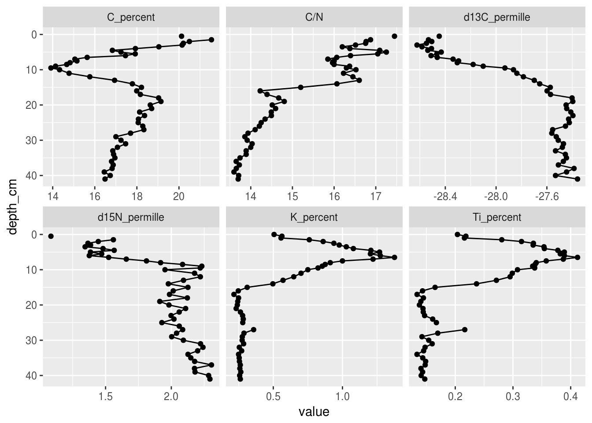
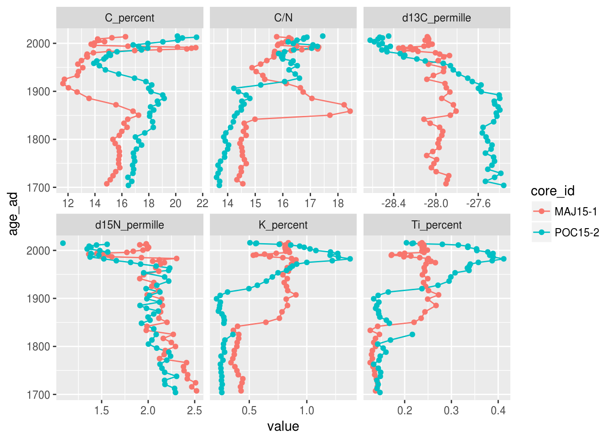
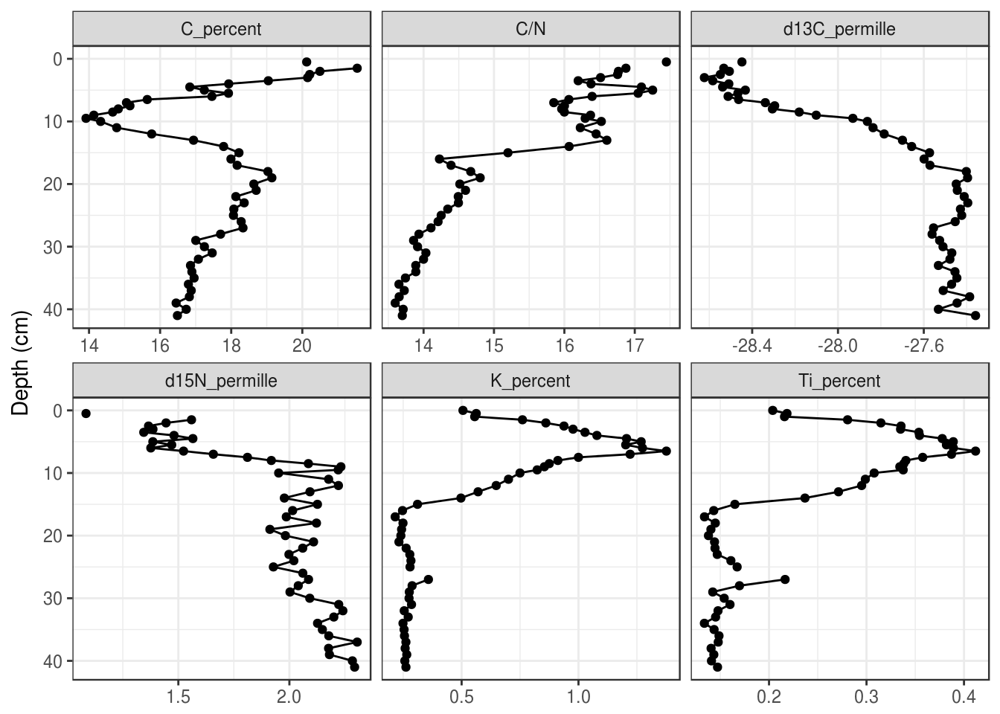
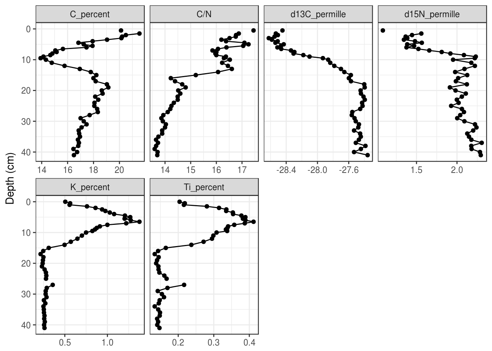

Tutorial 5 Creating Strat diagraoms
Intro
5.1 Prerequisites
The prerequisites for this tutorial are the tidyverse package, the analogue package, and the rioja package. If you haven’t installed the analogue and rioja packages yet, you’ll have to install them using install.packages().
install.packages(c("rioja", "analogue"))Load the tidyverse when you’re done! We will load the other packages when we use functions that require them below.
library(tidyverse)Finally, you will need to obtain the example data. In this tutorial, we will use the Lake Arnold diatom counts tidy CSV version of the data (Whitehead et al. 1989), and the Halifax geochemistry data. If you have these files downloaded you can load them yourself (see Tutorial 4), or you can copy/paste the following code to load the two datasets.
halifax_geochem <- read_csv(
"http://paleolimbot.github.io/r4paleolim/data/halifax_geochem.csv",
col_types = cols(.default = col_guess())
)
arnold_counts <- read_csv(
"http://paleolimbot.github.io/r4paleolim/data/lake_arnold_valve_counts_tidy.csv",
col_types = cols(.default = col_guess())
)5.2 Data preparation
- TODO: How to rename columns so that they look pretty, how to use
gather()andspread()to get data in the right form for the various functions.
5.3 Using ggplot
5.3.1 Single core
halifax_geochem %>%
filter(core_id == "POC15-2") %>%
gather(-core_id, -depth_cm, -age_ad, key = param, value = value) %>%
ggplot(aes(y = depth_cm, x = value)) +
geom_path() +
geom_point() +
facet_wrap(~param, scales = "free_x") +
scale_y_reverse()## Warning: Removed 1 rows containing missing values (geom_path).## Warning: Removed 10 rows containing missing values (geom_point).
5.3.2 Multiple cores
- Use colour aesthetic, age on y axis
halifax_geochem %>%
filter(core_id %in% c("POC15-2", "MAJ15-1")) %>%
gather(-core_id, -depth_cm, -age_ad, key = param, value = value) %>%
ggplot(aes(y = age_ad, x = value, colour = core_id)) +
geom_path() +
geom_point() +
facet_wrap(~param, scales = "free_x")## Warning: Removed 2 rows containing missing values (geom_path).## Warning: Removed 14 rows containing missing values (geom_point).
- Use facet_grid, age or depth on y-axis
halifax_geochem %>%
filter(core_id %in% c("POC15-2", "MAJ15-1")) %>%
gather(-core_id, -depth_cm, -age_ad, key = param, value = value) %>%
ggplot(aes(y = depth_cm, x = value)) +
geom_path() +
geom_point() +
facet_grid(core_id~param, scales = "free_x") +
scale_y_reverse()## Warning: Removed 1 rows containing missing values (geom_path).## Warning: Removed 14 rows containing missing values (geom_point).
5.3.3 Species data
arnold_counts_long <- arnold_counts %>%
gather(-age_bp, -depth_cm, key = taxon, value = valve_count) %>%
group_by(depth_cm) %>%
mutate(relative_abundance = valve_count / sum(valve_count) * 100) %>%
ungroup() %>%
group_by(taxon) %>%
filter(max(relative_abundance) > 20) %>%
ungroup()p <- ggplot(arnold_counts_long, aes(y = depth_cm, x = relative_abundance)) +
geom_segment(aes(xend = 0, yend = depth_cm)) +
geom_path() +
facet_grid(~taxon, scales = "free_x", space = "free_x") +
scale_y_reverse() +
scale_x_continuous(breaks = c(0, 5, 10, 15, 20, 25, 30)) +
theme_minimal() +
theme(
strip.text.x = element_text(angle = 45, hjust = 0, vjust = 0)
)
# gt <- ggplot_gtable(ggplot_build(p))
# gt$layout$clip[gt$layout$name=="panel-1-1"] = "off"
# grid::grid.draw(gt)
p
5.4 Using analogue::stratiplot
5.5 Using rioja::strat.plot
5.6 Summary
Tutorial summary
References
Whitehead, Donald R., Donald F. Charles, Stephen T. Jackson, John P. Smol, and Daniel R. Engstrom. 1989. “The Developmental History of Adirondack (N.Y.) Lakes.” Journal of Paleolimnology 2 (3): 185–206. doi:10.1007/BF00202046.